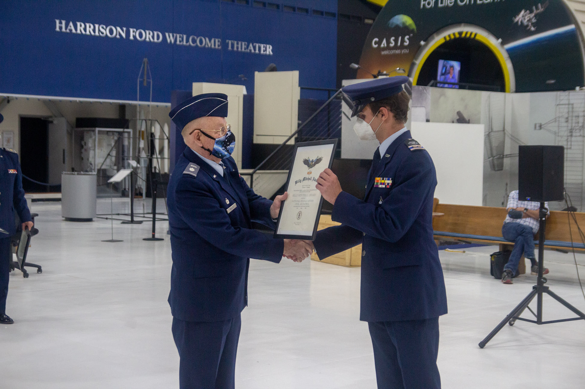

Excelled as a leader in the Civil Air Patrol Cadet Program. Received the Cadet of the Quarter award for excellence in drill, courtesies, and leadership. Earned the Flight Honor Cadet award for outstanding performance during summer encampment at the Air Force Academy Prep School. Appointed representative on the state and region-wide boards that dictate cadet activities in the Rocky Mountain States. Served as the commander of 20 cadets. Recipient of the Billy Mitchell and Amelia Earhart Awards.
Nominated and participated in the National Student Leadership Conference (NSLC) at Georgia Tech. Learned engineering topics and groupwork tactics. Led a group that won top six in the capstone project.
Developed the club to over 30 active members as a school-funded program. Led a team that built a rocket and competed in The American Rocketry Competition. Organized a visit to ULA Launch’s headquarters in Denver.
Worked teaching 9-14 year olds how to code, build, and fly drones. Gained significant experience leading teams during competitive portions of the program.
Promoted, wrote, and produced numerous pieces of music. This self-taught endeavor culminated in the release of four singles -- grossing a net of over sixty thousand streams on Spotify alone.
created with
Website Builder Software .